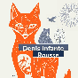
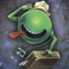

A bit disappointed by the album version of all the songs that are far less heavy than the singles. Nonetheless, Ennaria remains the absolute Hyperpop Decora Queen until further notice.
Ennaria - Manifesto
I would never have thought that mixing Bedroom waves and EDM sounds so great ! This album is weirdly the perfect balance between cuteness and aggression. Bonus points for the lyrics being about the early internet era.
Not the kind of music I usually enjoy, especially not house, but this one got an unique vibe that carried me through the summer. Also enjoyed their live so much, really feels like hanging out at your long-time friend party. A good album to chill when you need to.
Making Hatsune Miku screams like hell is pure freaking genius ! Screamo didn't appear in my discography yet, always glad to add a new entry at the forever expanding list of weebified music genres !


A gorgeous hand-animated roguelite. The whole atmosphere should hook you up immediately and it's a real pleasure to discover every easter eggs and secrets throughout the game. Because it depends on puzzle solving more than skill, it's easier than most dungeon crawlers but still great to dip into.